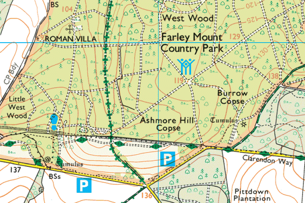

Hampshire Cross-Country League
Farley Mount, Winchester

View Ordnance Survey map (using Streetmap)
Get directions (using Google Maps)
View Bird's Eye (using Bing Maps)
Parking
- Please do not park on the roads leading to Farley Mount. The police may/will take action on cars parked incorrectly.
- Follow the signs to the car park where a charge of £2 will be made, to pay for the hire of the cross-country course and car parking.
- Please share cars where possible.
Sat Nav destination
Postcode: SO22 5QS (Note: This is the postcode of the Hampshire
County Council Crabwood depot at the eastern end of the site. Continue westward
along Sarum Road to the race venue.)
OS Grid Reference: SU413293
Further information
Farley Mount Country Park (link to Hantsweb)